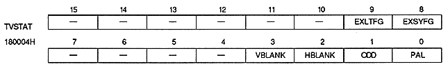

address | bit number | bit name | |||||||||||||||||||||||||||||||||||||||||||||||||||||||||||||
180020H | 9 | N1TPON | |||||||||||||||||||||||||||||||||||||||||||||||||||||||||||||
180028H | 13,12 | N1CHCN1, N1CHCN0 | Character Colors | ||||||||||||||||||||||||||||||||||||||||||||||||||||||||||||
1800D0H | 8 | N1W0A | W0 window area | ||||||||||||||||||||||||||||||||||||||||||||||||||||||||||||
9 | N1W0E | W0 window enable | |||||||||||||||||||||||||||||||||||||||||||||||||||||||||||||
10 | N1W1A | W1 window area | |||||||||||||||||||||||||||||||||||||||||||||||||||||||||||||
11 | N1W1E | W1 window enable | |||||||||||||||||||||||||||||||||||||||||||||||||||||||||||||
12 | N1SWA | SW window area | |||||||||||||||||||||||||||||||||||||||||||||||||||||||||||||
13 | N1SWE | SW window enable | |||||||||||||||||||||||||||||||||||||||||||||||||||||||||||||
15 | N1LOG | Window logic | |||||||||||||||||||||||||||||||||||||||||||||||||||||||||||||
1800E2H | 1 | N1SDEN | |||||||||||||||||||||||||||||||||||||||||||||||||||||||||||||
1800E4H | 6-4 | N1CAOS2 ~ N1CAOS0 | Color RAM address offset | ||||||||||||||||||||||||||||||||||||||||||||||||||||||||||||
1800E8H | 1 | N1LCEN | |||||||||||||||||||||||||||||||||||||||||||||||||||||||||||||
1800EAH | 3,2 | N1SPRM1, N1SPRM0 | Special priority mode | ||||||||||||||||||||||||||||||||||||||||||||||||||||||||||||
1800ECH | 1 | N1CCEN | |||||||||||||||||||||||||||||||||||||||||||||||||||||||||||||
1800EEH | 3,2 | N1SCCM, N1SCCM0 | Special color operation mode | ||||||||||||||||||||||||||||||||||||||||||||||||||||||||||||
1800F8H | 10-8 | N1PRIN2 ~ N1PRIN0 | Priority number | ||||||||||||||||||||||||||||||||||||||||||||||||||||||||||||
180118H | 12-8 | N1CCRT4 ~ N1CCRT0 | Color calculation ratio | ||||||||||||||||||||||||||||||||||||||||||||||||||||||||||||
180110H | 1 | N1COEN | |||||||||||||||||||||||||||||||||||||||||||||||||||||||||||||
180112H | 1 | N1COSL |
